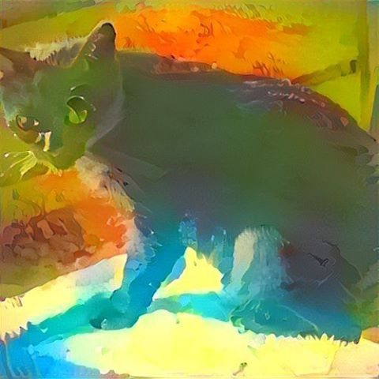
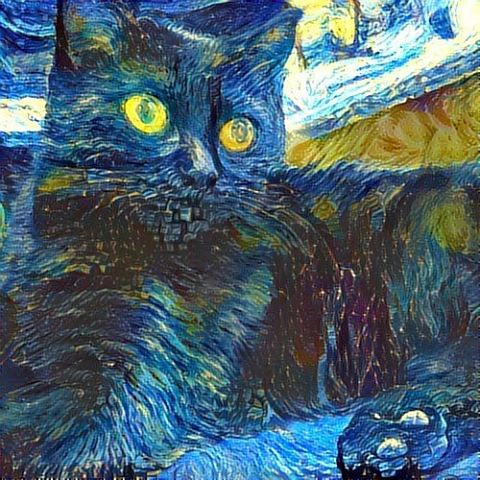
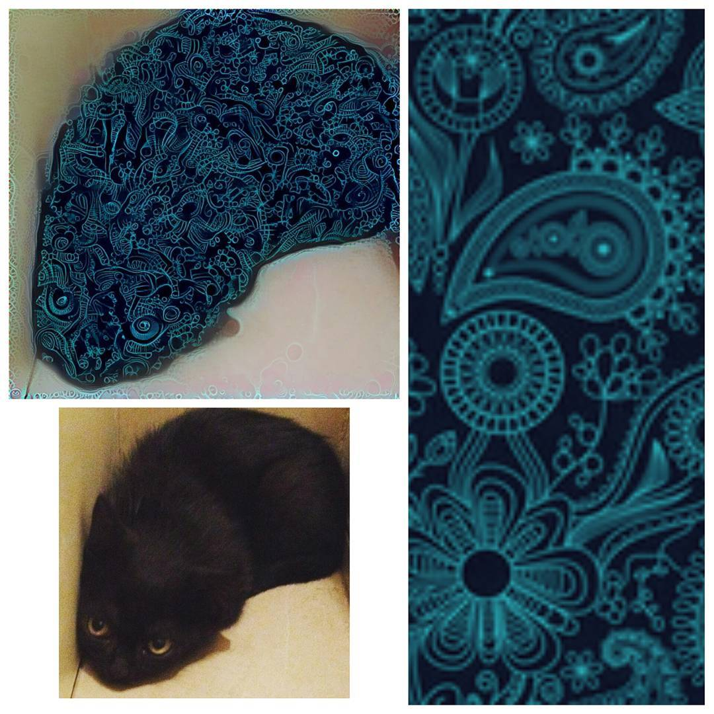

To generate awesome images applying the style of an image to another image
Install torch
git clone https://github.com/torch/distro.git ~/torch --recursive
cd ~/torch; bash install-deps;
./install.sh
source ~/.bashrc # or .zshrc or .profileInstall caffe ``` sudo apt-get install libprotobuf-dev protobuf-compiler # for mac "brew install protobuf" luarocks install loadcaffe
+ Install neural_style and presetsgit clone https://github.com/jcjohnson/neural-style.git ~/neural-style cd ~/neural-style && sh models/download_models.sh
+ Usageth neural_style.lua -style_image
```
  